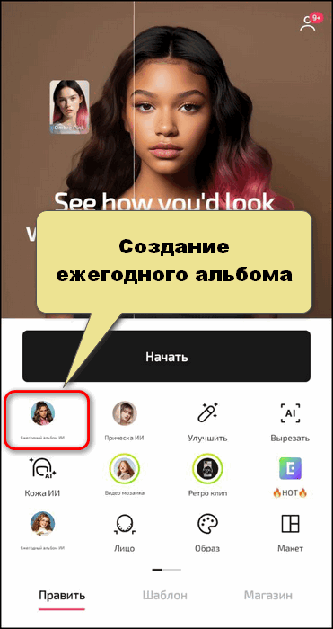
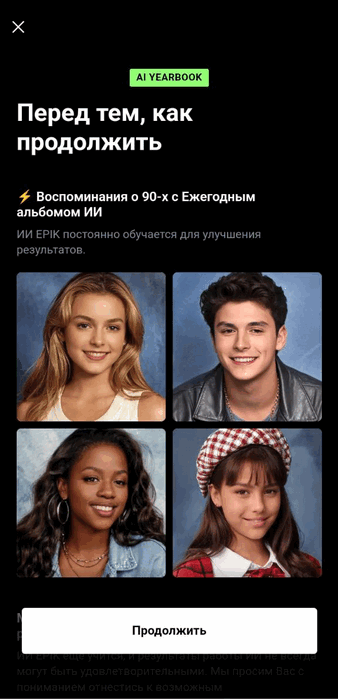
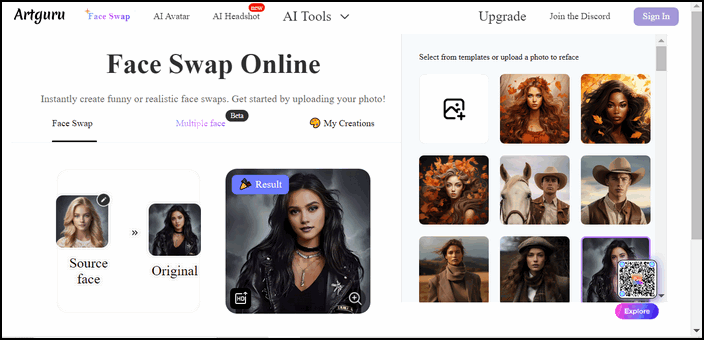
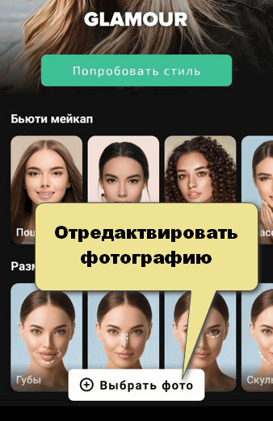
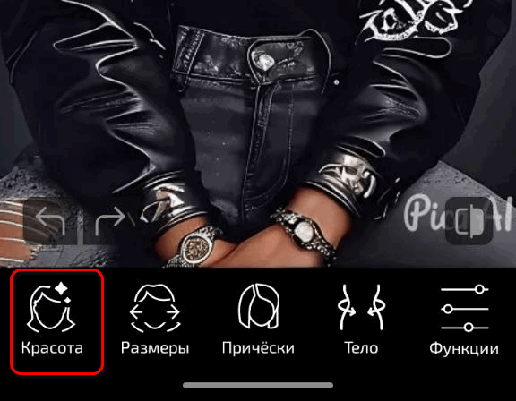
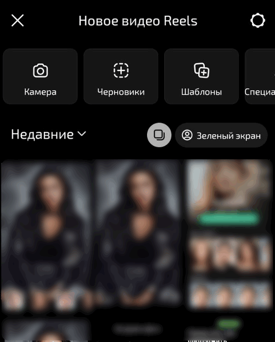

Школьный альбом: новый тренд Инстаграма

Новый тренд в Инстаграме* — создание фотографий как в школьном альбоме 90-х. И в генерации отличных снимков помогают нейросети и приложения, а также создать такое фото можно с помощью компьютерных программ.
Тренд со школьным альбомом: откуда появился
Приложение EPIK выпустило обновление, где пользователям стала доступна генерация нескольких фото в виде школьного альбома. Впервые тренд появился в Тик Токе и уже после перешел в Инстаграм* в стандартные публикации. Блогеры создают до 10 снимков и публикуют их в Ленте. Или же выбирают из списка наиболее удавшиеся изображения в количестве 3-5.
Приложение EPIK для альбома в Инстаграм*
Чтобы сделать такие картинки нужно установить приложение EPIK из Play Market или APPSTORE. Пользователю будет доступен пробный период в течение которого можно создавать разные дизайны. Но это не касается стиля «Школьный альбом», который оплачивают отдельно. Поэтому у пользователя есть другой вариант — воспользоваться модом APK. Это возможно только на смартфонах под управлениям Android. Или же обратиться к другим нейросетям, где есть обработка снимков. Как сделать школьный альбом с помощью EPIK:
- Зайти в магазин приложений — найти среди списка нужное.
- Установить — открыть и выбрать среди стилей «School album».

- Загрузить 10 фотографий, где четко видно лицо и нет фильтров.
- Подтвердить покупку функции — подождать, пока приложение обработает снимки.

- Внести изменения, если это необходимо — сохранить фото в Галерею.
Среди получившихся 10 фотографий выбрать те, которые нравятся автору и подходят под стиль страницы в Инстаграме*.
Нейросети для обработки фото
Если платить за обработку снимков не хочется – можно воспользоваться нейросетями. Например, Телеграм-бот TuroText.AI, где есть бесплатных 10 попыток чтобы создать изображение. Подборка нейросетей для обработки:
- FaceSwapper. Подбираете изображение куда нужно вставить лицо и выбрать своё фото, чтобы добавить на фото;
- ARTGuru.Ai. Нейросеть, где есть отдельный стиль «Школьный альбом»;
- Tuguoba. Можно выбрать раздел «Смена лица» и подобрать изображение, куда нужно вставить снимок.
На примере ArtGuru.Ai создаем один снимок для школьного альбома:
- Зайти на сайт – выбрать среди стилей «YearBook».
- Выбрать из списка предложенных фотографию в качестве оригинала.

- Нажать по кнопке: «Add Face» - указать на компьютере или телефоне свой снимок.
- Нажать по кнопке: «Generate» - создать изображение и скачать.
Недостаток такого варианта в том, что нейросеть генерирует только портретные изображения.
Фоторедакторы
Создавать интересные картинки можно с помощью других фоторедакторов. С помощью Persona пользователь сможет улучшать внешность, использовать художественные фильтры. Интересные приложения для контента в Инстаграм*:
- Photoleap. В его функциях есть фильтр: «Yearbook», «80-e», «Fantasy» и «Dolls», которые подходят для креативного контента;
- Lensa. Предлагает создать необычную аватарку с подборкой 10 разных стилей, отдельные инструменты с нейросетью.
Наиболее простой и легкий в работе – Persona, где доступно добавление макияжа, изменение черт лица.
Как использовать:
- Скачать из Play Market или AppStore – установить.
- Открыть – выбрать снимок для редактирования.

- Нажать кнопку: «Красота» - выбрать подходящий эффект.
- С помощью ползунка отрегулировать яркость.

Далее фото сохранить на телефон и опубликовать в социальной сети. Или же воспользоваться разделом «Художественная обработка», чтобы изменить лицо и задний план.
Разместить фото для повышения активности
Кроме того, что нужно сгенерировать картинку, автор должен её опубликовать с подходящими хештегами.
Для фотографии со школьного альбома: #yearbook #trend #top #school #2023school
Чтобы привлечь больше аудитории, желательно добавлять изображения в «карусель» до 10 штук. И начинать с портретного снимка, которые быстрее продвигаются в «Рекомендациях». По жалению прикрепить музыкальное сопровождение с музыкой «Диско 80-х».
Трендовый Reels в Инстаграм*
Создание клипа с обработанными снимками также актуально среди пользователей Инстаграма*. Сделать короткое видео поможет приложение InShot или встроенный редактор социальной сети. Сделать трендовый Reels:
- Зайти в Instagram* – нажать снизу по кнопке: «Reels».

- Добавить обработанные снимки – выбрать музыкальное сопровождение.
- Опубликовать.
А чтобы запись быстрее набрала просмотры – поискать подобные клипы и музыку, которая там используется.